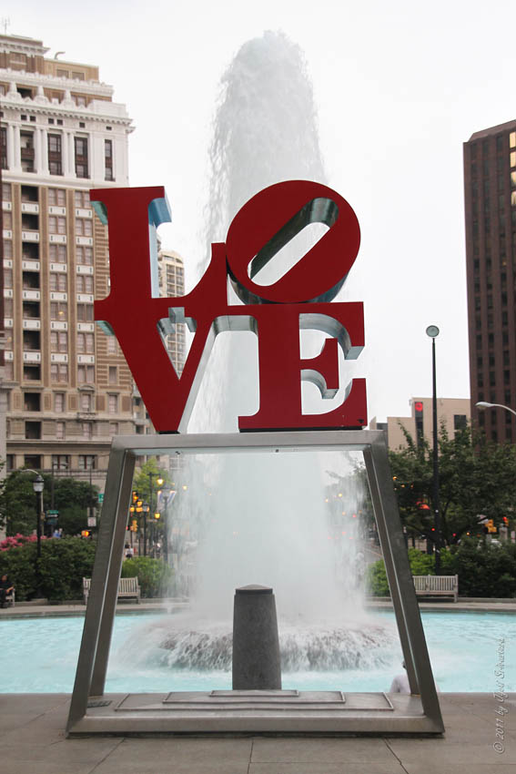
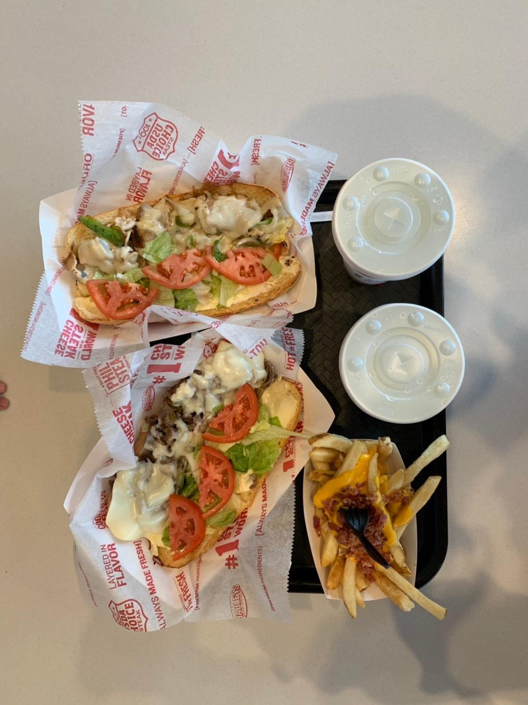

Philadelphia, being the most populated city in Pennsylvania, played a significant role during the American War of Independence. Both the unanimous Declaration of the thirteen united States of America and the Constitution of the United States of America drafted and signed within the Independence Hall on 4th July, 1776. When visiting the Independence Hall, don’t forget to stop by the Liberty Bell as well! The bell was once hung on the top of the Independence Hall building; however, it was then removed to the due to impairments. The crack on the bell was said to be caused by knocking too hard while celebrating George Washington’s birthday in 1846.
The Philadelphia City Hall is the greatest of all city halls in the United States, and it is known for its attractive outer appearance. However, you can also inspect the interior part of the City Hall by paying an admission fee of $18. (See Official Website) On the northwestern side of the City Hall locates the John F Kennedy Plaza, the “LOVE sculpture” on the plaza is also one of the famous check-in attractions in Philadelphia, and people therefore nicknamed the plaza as “LOVE park”. If you ever happen to stop by the park around Christmas, you may have a chance to encounter holiday fairs that hold annually.
- 
You can miss anything but the ultimate iconic food in Philly – the Cheesesteaks! Cheesesteaks are simply thinly sliced ribeye beef sautéed and tucked into a fresh roll with melted cheese topping on it. The food was said to be invented by Pat Olivieri, who owned a hotdog cart in the1930s, later imitated by many. In this day and age, you can find a cheesesteak stand almost everywhere in Philadelphia. Though they come in high calories and fats, eating once in a while won’t do much damage to your health, so just grab one and dig in!
- 